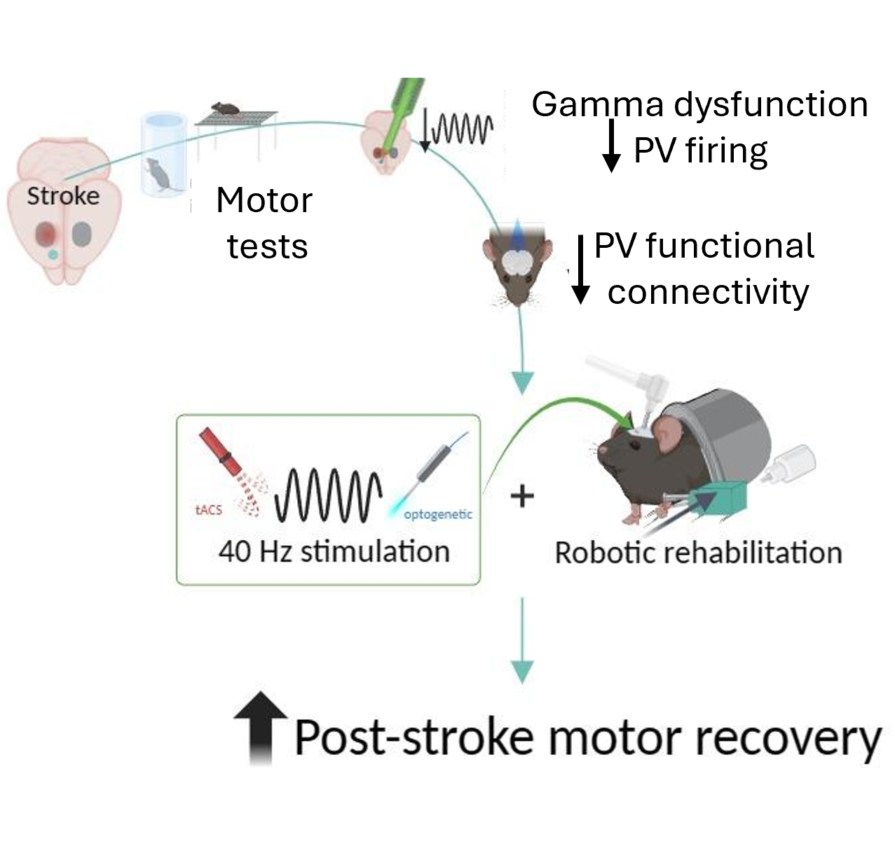
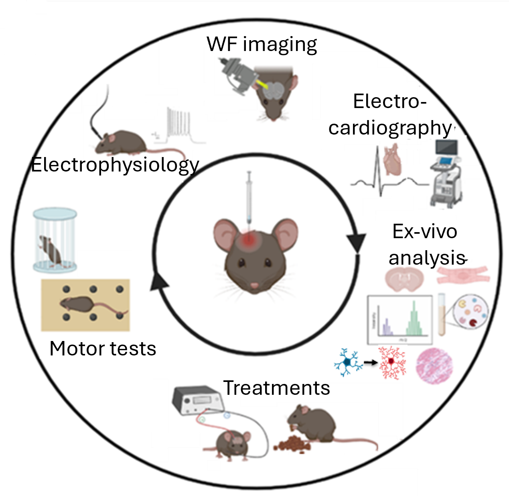
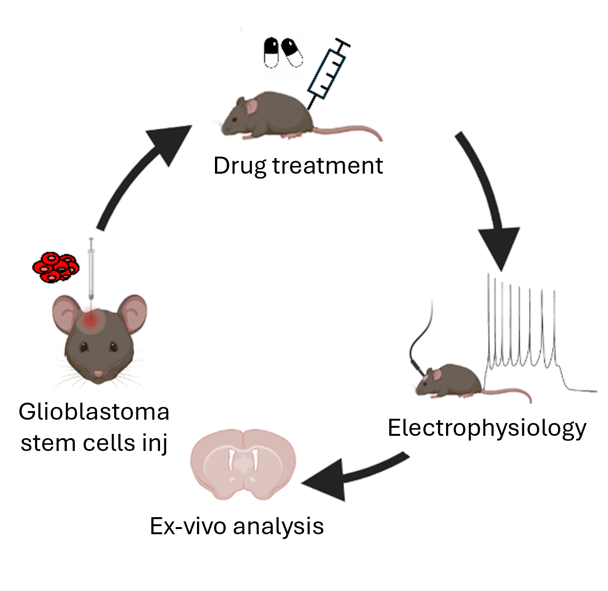
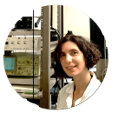

About Us
At the NeuroRestorative Lab we are committed to advancing our understanding of neural circuits and their involvement in neurological disorders and motor function. Our research is facilitated through the use of a robotic platform designed for motor rehabilitation. We employ a range of experimental techniques, including in vivo electrophysiology, behavioral assays, anatomical and molecular analyses, and advanced imaging methods.
Our multidisciplinary team, led by Dr. Cristina Spalletti, explores neuroplasticity and its potential in fostering recovery from neurological injuries. Our mission is to translate groundbreaking research into new therapeutic strategies that can improve patient outcomes.

Our Research Focus
Restoring Forelimb Motor Function After Stroke

Our research combines robotic rehabilitation with Gamma band stimulation to boost motor recovery after stroke. Using a photothrombotic mouse model, we observed changes in Gamma band power and parvalbumin-interneuron dynamics in the spared cortex, highlighting their role in recovery. Integrating optogenetics and non-invasive transcranial stimulation with rehabilitation led to significant forelimb motor improvements, suggesting a promising approach for enhancing stroke rehabilitation.
Vignozzi L., Macchi F. and Montagni E. et al., 2024. Gamma Neuromodulation and Robotic Rehabilitation Boost Motor Recovery in Stroke Mice
Elucidating Cortical Dynamics in Parkinson's Disease

Parkinson's Disease is characterized by the progressive degeneration of dopaminergic neurons, leading to significant motor impairments. Our lab uses a mouse model to investigate the electrophysiological and functional changes in the motor cortex following dopamine depletion. By integrating advanced techniques such as in vivo wide-field imaging, in vivo electrophysiology, behavioral tests and biochemistry, we aim to unravel the cortical plasticity phenomena and identify novel therapeutic targets.
Minetti A., Montagni E. and Meneghetti N. et al., 2025. Altered cortical network in Parkinson’s Disease: the central role of PV interneuron and synaptic remodelling
Enhancing Glioblastoma Cells Sensibilisation to Chemotherapy

Glioblastoma multiforme is an aggressive brain tumor that invades neural tissue and disrupts function. Our research focuses on the molecular communication between glioblastoma stem cells and neurons, especially the role of voltage-gated sodium channels. Through in vitro studies and in vivo mouse models, we aim to disrupt glioblastoma stem cell-neuron interactions, inhibit tumor growth, and improve therapeutic strategies, providing new hope for patients with this challenging disease.
Giammello F. and Biella C. et al., 2024. Targeting Glioblastoma-Neuron Communication to Enhance Chemosensitivity
Meet Our Team
Dr. Cristina Spalletti

Dr. Spalletti is the group leader with extensive experience in neurophysiology and neurodegenerative diseases. Her work is dedicated to uncovering the neural underpinnings of motor control and developing therapeutic approaches for conditions like stroke, Parkinson's Disease and glioblastoma.
Email: cristina.spalletti@in.cnr.it
Dr. Antea Minetti
Dr. Minetti is a post-doctoral researcher specializing in the use of viral vectors for neural circuit manipulation. Her research integrates advanced techniques such as electrophysiology, cellular and molecular biology, and imaging to explore neurodegenerative mechanisms and develop potential therapeutic strategies.
Email: antea.minetti@in.cnr.it
Alessandra Martello
Alessandra is a PhD student at Scuola Superiore Sant'Anna, contributing to the Parkinson's Disease project. Her research specifically focuses on the heart-brain axis, exploring how neurodegeneration and disease progression in Parkinson's Disease influences cardiovascular health.
Email: alessandra.martello@santannapisa.it
Éléa Coulomb
Éléa is a PhD student at Scuola Normale Superiore, working on the Parkinson's Disease project. Her research is centered on the microglial response within the brain, investigating how these immune cells contribute to neuroinflammation and neuronal damage in Parkinson's Disease.
Email: elea.coulomb@sns.it